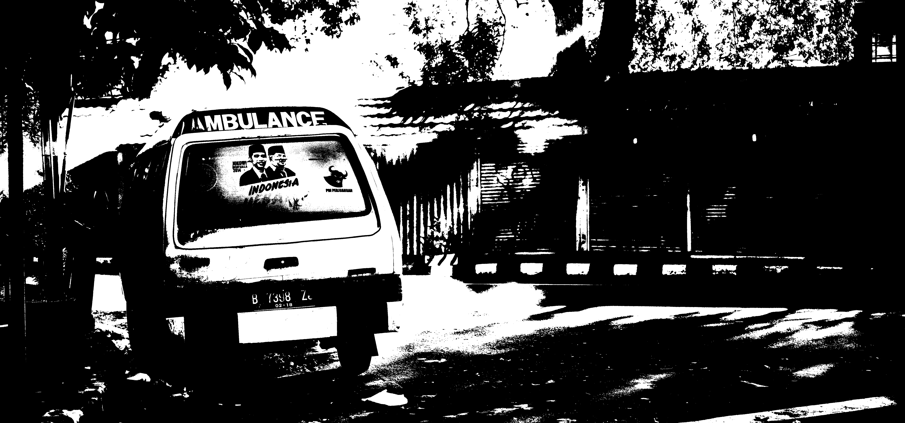

The driving force behind Apatsu is to locate nearest hospitals, calling ambulance, get medicines delivered at your doorsteps, check yourself by telling the symptoms,locate nearest bloodbanks etc.
Driving to a pharmacy, waiting at the counter, keeping track of refills—this is what medication is all about these days, especially when you are taking care of your ailing loved ones at home. It is time you save time and get medicines delivered at your doorstep with our Medicine Delivery at APATSU. We assure you round-the-clock services along with providing you auto refills as and when your medicine supply draws to a close.
Health is essential for everyone. Health can’t be bought by anything. Health is important no matter what country we are from or what race we are, or what age or gender we are. some important details like the patients allergy and medical history will be overlooked by the doctors when they diagnosing. The procedure for diagnosing also consume a big amount of time although the patients comes with a minor problem that they can settle it by themselves if they have the right help.
GPS based technology platform for fast and reliable first point medical attention. With an increasing emphasis on promoting independent living today, having access to the nearest ambulance to you can provide much needed peace of mind in a worst case scenario./p>
Need help finding hospitals and medical centers, medical clinics, CLSCs, community heath centers, physicians or alternative care specialists? Whether you are moving to a new region and want to locate the medical clinic that is closest to your home or you need help finding a hospital that provides the specialized services you are seeking, we can help.